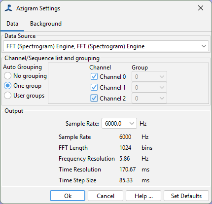
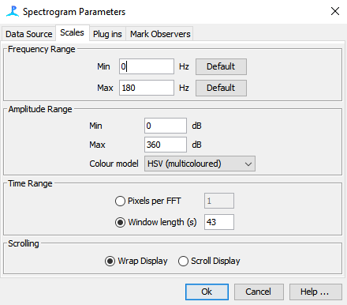
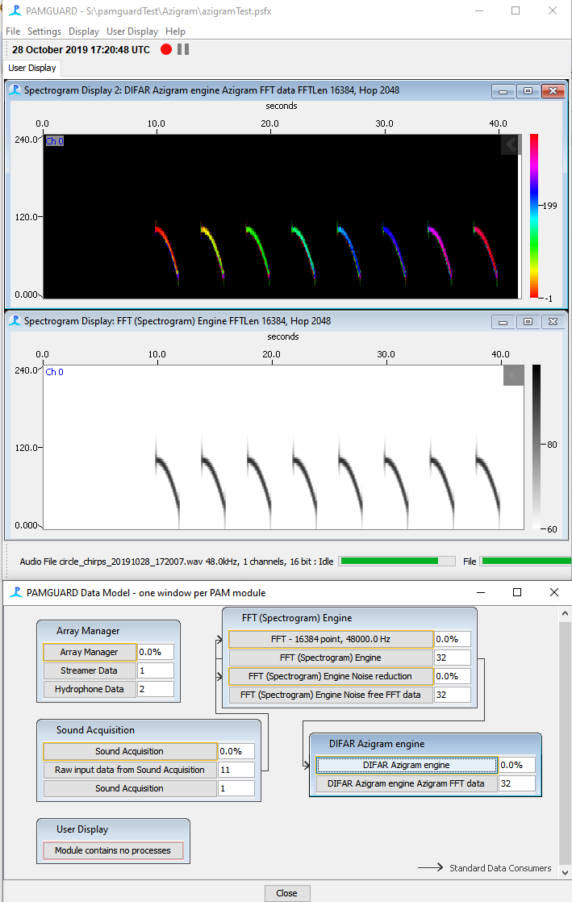

Version 0.1.0, tested on PAMGuard 2.03.00. This plugin is beta software. It has not been optimised for speed and may contain bugs.
The Azigram shows directional information from a DIFAR sonobuoy. It looks like a spectrogram, but colour shows the bearing of arrival in each time-frequency cell, not its power.
The plugin implements the Azigram algorithm, and the frequency domain demultiplexing of DIFAR signals, described by Thode et al. (2019).
Copy the Azigram jar file into the plugins folder of your PAMGuard installation, then restart PAMGuard. Add the module from:
File > Add Module > Localisers > DIFAR Azigram Engine
The plugin needs input from an FFT module. The raw input to that FFT module must be multiplexed data from a DIFAR sonobuoy with at least 24 kHz of bandwidth. This is the same input used by the DIFAR Localisation module.
The Data Source panel selects the FFT module and channels to use. The FFT length and hop, and so the time and frequency resolution, come from that FFT module.
The Output panel sets the output sample rate. The plugin downsamples in the frequency domain. It adjusts the output FFT length and hop to keep the same time and frequency resolution as the source FFT module.

Weak cells are faded towards black, so that only real signals show clear bearings. There are two ways to decide what counts as weak.
Adaptive (percentile tracker). This is the default. The plugin tracks the background level in each frequency bin over time, and fades cells by how far they sit above it.
Fixed (absolute dB re 1 µPa). Use this if you already know your local noise level. Set the Fade floor (default 70 dB) and Fade threshold (default 90 dB) directly. These levels use the hydrophone sensitivity set in the Array Manager.
Changes to the fade settings update an open display straight away.
View the output on a Spectrogram Display, and select the Azigram as its data source. The display sets itself up automatically. It uses a 0 to 360 degree scale and the circular HSV colour map, so that 359 degrees looks similar to 1 degree.

The example below shows the Azigram (top) and ordinary spectrogram (middle) of a synthetic DIFAR signal. It has eight short downsweeps arriving from 0 to 315 degrees in 45 degree steps.

Thode AM, Sakai T, Michalec J, Rankin S, Soldevilla MS, Martin B, Kim KH (2019) Displaying bioacoustic directional information from sonobuoys using "azigrams". J Acoust Soc Am 146:95–102. doi:10.1121/1.5114810